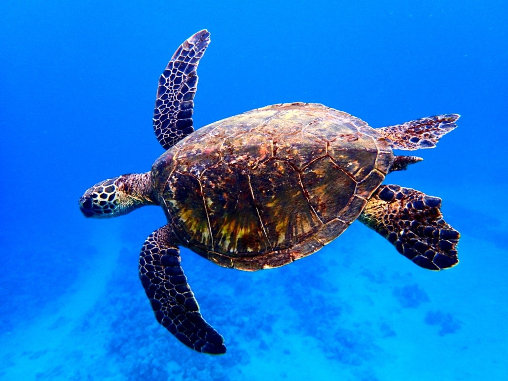
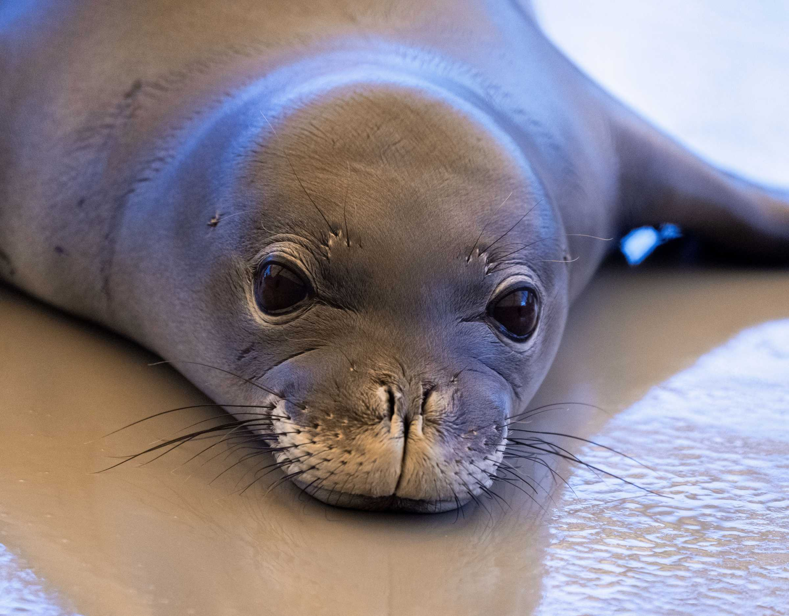
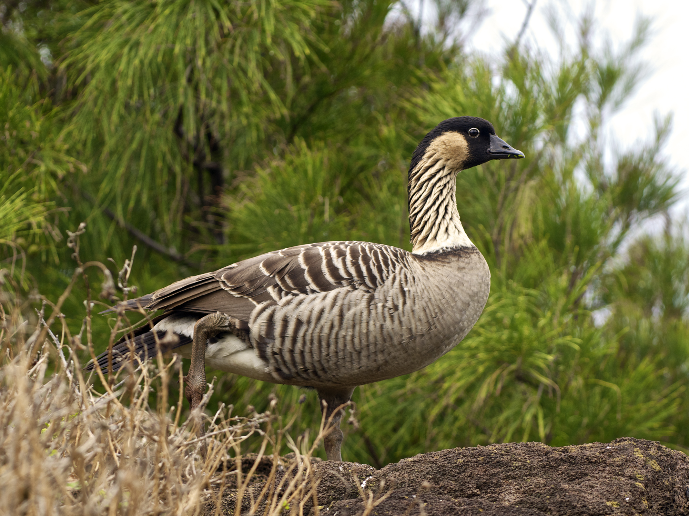
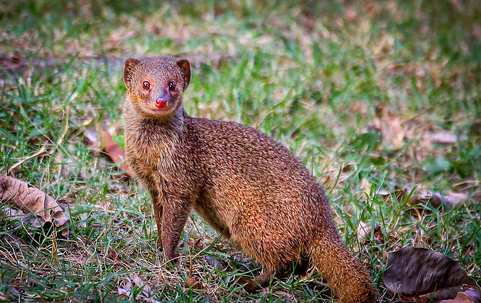
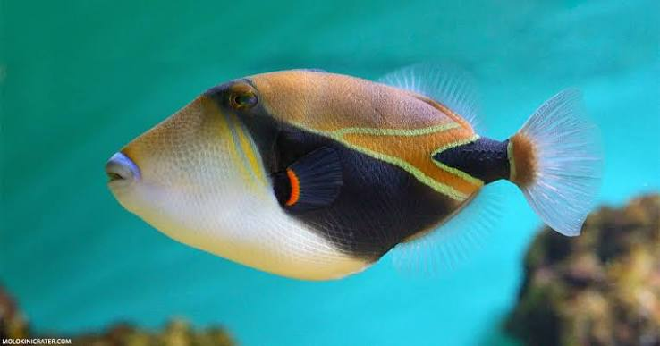

<!DOCTYPE html>
<html>
  <head>
    <link rel="stylesheet" href="animals.css">  
  </head>
  <body>
    
  </body>
</html>

<p><h1>🌺Here are some fun facts:🌺</h1></p>

<h2 class="animal-title">Hawaiian Sea Turtle</h2>



<ul><h3>
  <li>The Hawaiian green sea turtle is called the Honu on the islands</li>
  <li>Their shells can grow up to 5 feet</li>
  <li>They are protected under Hawaiian state and federal laws</li>
  <li>Symbolize wisdom, guidance, and good fortune</li>
  </ul></h3>

<p>Learn more about Hawaiian sea turtles:
  <a href="https://www.fws.gov/story/species-spotlight-hawaiian-green-sea-turtle-honu">
    US Fish and Wildlife Service</a></p>

<h2 class="animal-title">Hawaiian Monk Seal</h2>



<ul><h3>
  <li>Rare to be spotted on the shore or in the water</li>
  <li>Mostly spotted on the shores of Poipu or Kaimana </li>
  <li>One of the most endangered species in the world</li>
  <li>Can live up to 30 years</li>
  </ul></h3>

<p>Learn more about the Hawaiian Monk Seal:
  <a href="https://www.fisheries.noaa.gov/species/hawaiian-monk-seal">
    NOAA Fisheries</a></p>

<h2 class="animal-title">Hawaiian Bird</h2>



<ul><h3>
  <li>Hawaiian Goose: Nēnē</li>
  <li>Named official state bird in 1957 </li>
  <li>Mostly found on Big Island, Maui, and Kaua'i</li>
  <li>Can be found on shrublands, grasslands, coastal dunes, and lava plains </li>
  </ul></h3>

<p>Learn more about the Hawaiian Nēnē:
  <a href="https://www.nps.gov/hale/learn/nature/haleakala-nene.htm">
    National Park Service</a></p>

<h2 class="animal-title">Hawaiian Mongoose</h2>



<ul><h3>
  <li>Found more commonly on the Big Island, O'ahu, Moloka'i and Maui </li>
  <li>Invasive species</li>
  <li>Hunt ground-nesting birds and eat their eggs</li>
  <li>Can be aggresive and vicious</li>
  </ul></h3>

<p>Learn more about the Hawaiian Mongoose:
  <a href="https://dlnr.hawaii.gov/hisc/mongoose-urva-auropunctata/">
    hawaii.gov</a></p>

<h2 class="animal-title">Hawaiian Fish</h2>



<ul><h3>
  <li>The reef triggerfish, more commonly known as the "Humuhumunukunukuapua'a"</li>
  <li>Humuhumunukunukuapua'a translates to "triggerfish with a snout like a pig," in Hawaiian</li>
  <li>Can be territorial and can bite</li>
  <li>Official Hawaiian state fish that can grow up to 10 inches</li>
  </ul></h3>

<p>Learn more about the Hawaiian Mongoose:
  <a href="https://www.waikikiaquarium.org/experience/animal-guide/fishes/triggerfishes/reef-riggerfish/">
    Waikikiaquarium</a></p>

